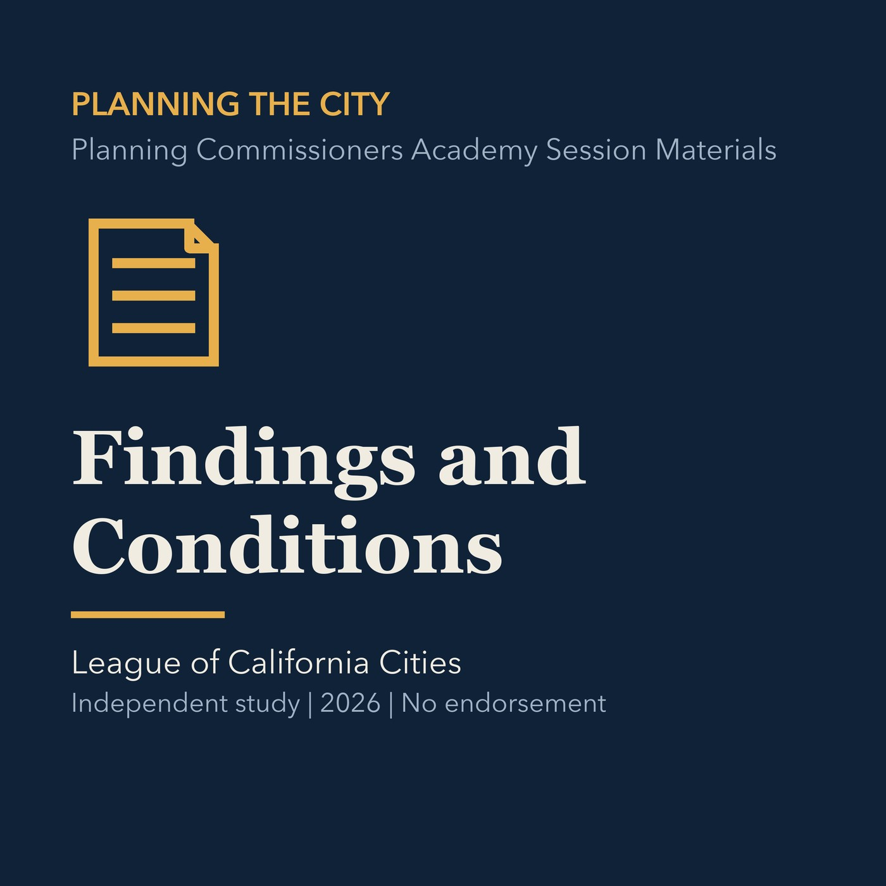

EPISODE 05
Findings and Conditions
Connects required findings to substantial evidence and conditions that can be administered.

- Stable GUID
a66f300f-15c4-532f-acdb-aae348cba9dc- Release
- planning-commission-prep-v2026.1
- SHA-256
0e57ac5bfe290b54d47fc756556ad1fc54c420168835a5d7246ad40a81abc8fb